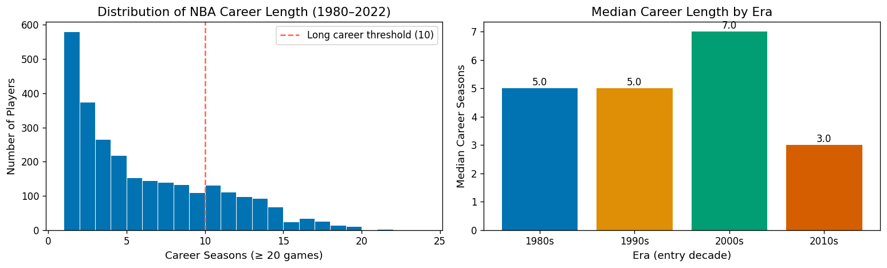
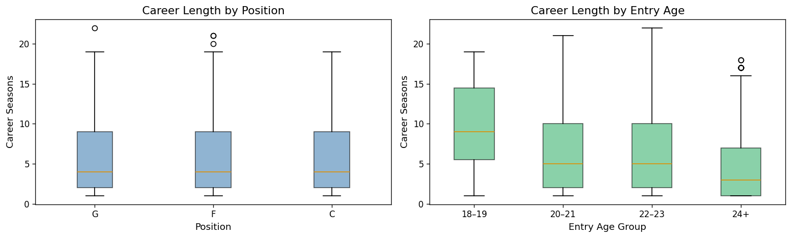
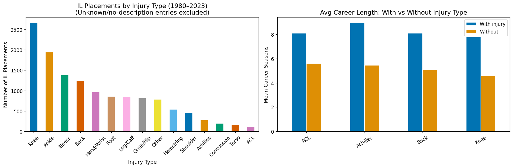
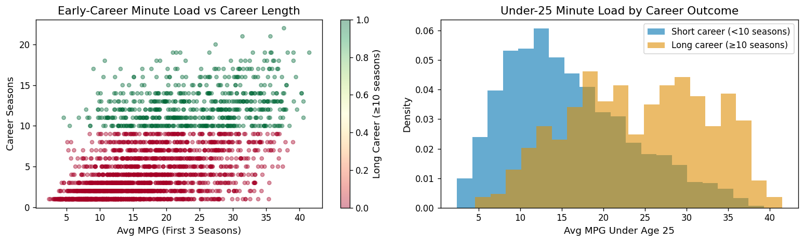
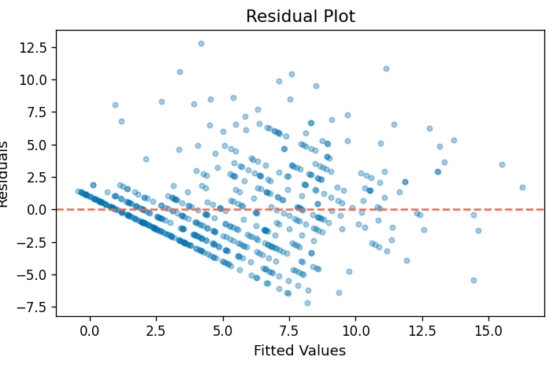
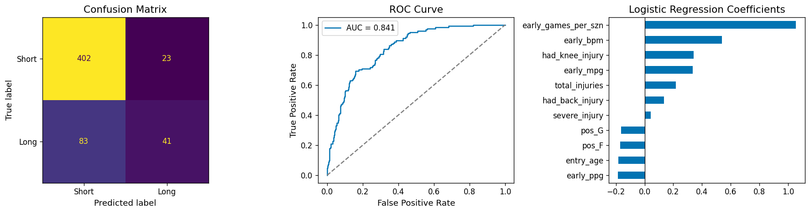
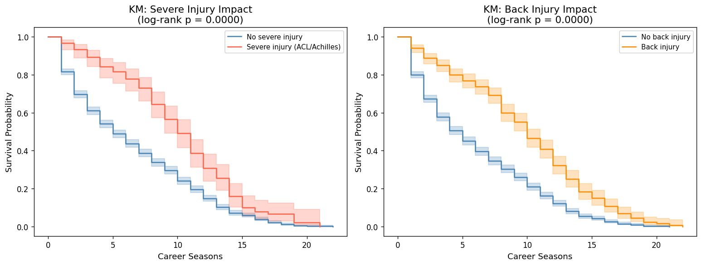
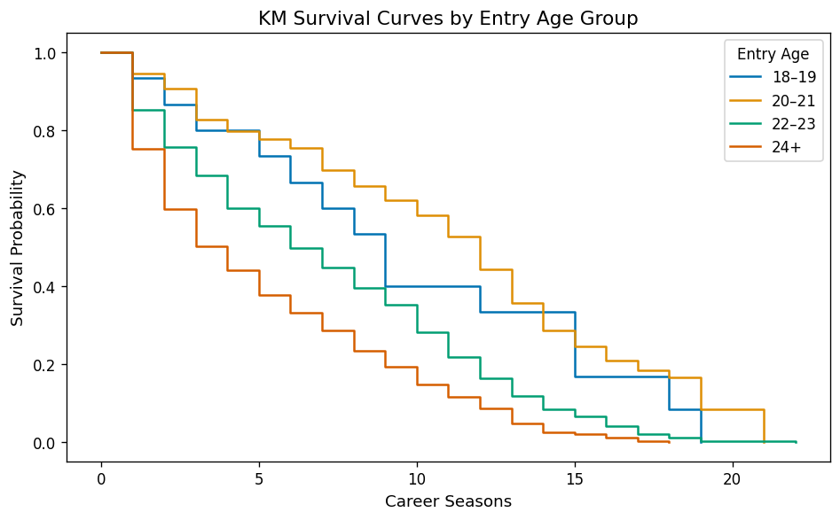
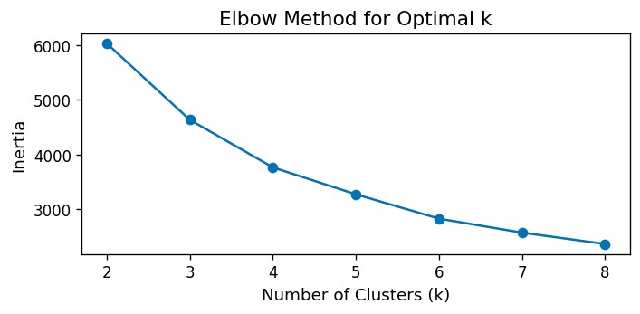
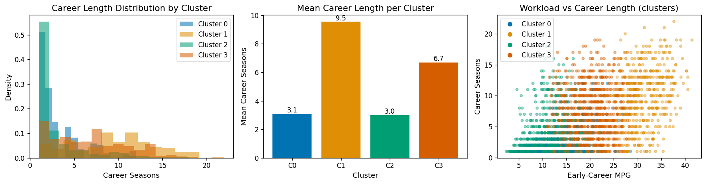

Driving question: what factors most predict how long an NBA player sustains a productive career?
NBA careers are shaped by talent, physical workload, and injury history, but it is not obvious how much each of these actually matters for how long a player lasts. This project looks at the predictors of NBA career length using three publicly available Kaggle datasets compiled from Basketball Reference and official NBA records: per-season player statistics covering 4,486 players from 1947–2026, a game-level box score dataset with about 1.67 million individual player records, and an injury log of roughly 37,600 injury list transactions with free-text injury descriptions spanning 1951–2023. We restrict the analysis to the modern NBA era (1980–2022) so that the data is reasonably complete.
We apply four modelling approaches. An Ordinary Least Squares regression models total seasons played as a function of early-career workload, injury history, entry age, and position. A logistic regression classifier predicts whether a player will reach a "long career" of ten or more seasons using only their first three years of data, and reaches a ROC-AUC of 0.84. Kaplan-Meier survival curves and a Cox Proportional Hazards model examine how injury type and entry age affect the hazard of a career ending. Finally, K-Means clustering groups players into distinct workload profiles and compares career longevity across clusters.
The main takeaway is that talent selection and survivorship bias drive most of what we observe. High early-career minute load is positively associated with career length, since high-usage players tend to be more talented and hold onto roster spots longer. Players who suffer severe injuries (ACL, Achilles) actually average longer careers for the same reason: only established players spend enough time on the court to pick up these injuries in the first place. Players who enter the league at 18–19, almost all of whom are elite lottery picks, average over three more seasons than players entering at 22–23. Together, these results show how hard it is to separate a causal workload effect from talent.
An NBA career is one of the most physically demanding careers in professional sports. The average career lasts around four to five seasons, and only a handful of players manage productive careers past fifteen years. Figuring out what separates long-career players from short-career ones has real implications for team management (roster construction, load management decisions), player development (draft evaluation, minutes allocation for young players), and sports medicine (identifying which injury types carry the highest long-term risk).
There are two competing narratives in sports media. The first argues that heavy early-career workloads, especially for players who enter the league as teenagers, wear the body down and shorten careers. The second argues that player quality is the dominant factor: elite players both receive heavy minutes AND sustain long careers, so the workload-longevity relationship looks positive in the raw data even if the true causal effect is neutral or negative. Telling these two stories apart requires careful statistical modelling that controls for talent proxies.
In terms of motivation, we are both basketball fanatics, and love to play, watch, and talk basketball. When brainstorming project ideas we knew immediately that we wanted to revolve it around the sport, but were unsure which direction to take it in. We are both Clippers fans, and anyone who knows anything about basketball knows that Kawhi Leonard is one of the most injury-prone players in the NBA today. Because of this, we decided to do this project about injuries in basketball, and how they affect long-term careers. We were very pleased with our results, and learned a great deal throughout this process.
This project addresses four specific questions motivated by the proposal:
We model total career seasons Y as a linear function of a feature matrix X:
The OLS estimator minimises the residual sum of squares, yielding the closed-form solution:
Model fit is assessed via the coefficient of determination R² = 1 − SS_res / SS_tot
and root mean squared error RMSE = √( (1/n) Σ(yᵢ − ŷᵢ)² ).
Residual plots are used to check the homoscedasticity and normality assumptions. The F-statistic tests
the joint significance of all predictors. Inference uses a 80/20 train–test split.
To predict a binary outcome (long career, Y=1, ≥10 seasons, vs short career, Y=0) we fit a logistic regression model:
Parameters β are estimated by maximising the log-likelihood via gradient descent. Features are standardised before fitting so the coefficient magnitudes are comparable. Model evaluation uses:
Kaplan-Meier Estimator. The non-parametric survival function is estimated as:
where dᵢ is the number of career endings (events) at time tᵢ and nᵢ is the number of players still active just before tᵢ. Players still active at the end of the observation window (2022) are treated as right-censored. Group differences are tested with the log-rank test, whose statistic under H₀ follows a χ²₁ distribution.
Cox Proportional Hazards Model. The semi-parametric Cox model specifies:
where h₀(t) is an unspecified baseline hazard. The hazard ratio exp(βj) gives the multiplicative change in retirement hazard for a one-unit increase in predictor j. Parameters are estimated via partial likelihood, which eliminates the nuisance baseline hazard. The penalizer λ = 0.1 provides mild L₂ regularisation to improve numerical stability.
K-Means partitions n players into K clusters by minimising the within-cluster sum of squared Euclidean distances:
where μₖ is the centroid of cluster Cₖ. Lloyd's algorithm alternates between assigning each point to its nearest centroid and recomputing centroids until convergence. Features are standardised to unit variance before clustering. The optimal K is chosen with the elbow method: we plot within-cluster inertia against K and pick the value where the marginal gains start to level off. Career longevity is then compared across clusters to see whether workload archetype is associated with career length.
We use three publicly available datasets from Kaggle, all compiled from Basketball Reference and official NBA records:
| Dataset | Rows | Key Variables | Source |
|---|---|---|---|
| NBA Player Per-Season Statistics | ~33,000 | Games, minutes, points, position, age, shooting splits | Basketball Reference via Kaggle |
| NBA Player Injury Log | ~37,600 | Date, team, player, free-text injury description | Basketball Reference via Kaggle |
| Advanced Per-Season Statistics | ~33,000 | BPM, VORP, usage%, win shares | Basketball Reference via Kaggle |
| Player Career Info | ~5,400 | Birthdate, debut, career span (from–to) | Basketball Reference via Kaggle |
The unit of observation in the per-season files is a player-season pair. The injury log records each individual injury list (IL) placement transaction. We restrict the analysis to the modern NBA era (1980–2022) to avoid the sparse pre-IL period identified in the proposal. A season only counts toward career length if the player appeared in at least 20 games, which filters out brief call-ups.
The resulting sample is a convenience sample of all NBA players active between 1980 and 2022. Since we observe the entire population of active NBA players rather than a random draw from it, formal frequentist inference should be read as describing effect sizes within this population rather than generalising to some broader population.
Data cleaning, missingness handling, injury-type parsing from free text, and the full feature-engineering pipeline (early-career workload, injury aggregation, career-level rollups) are covered step by step in the notebook. — see full notebook →
The visualizations below look at the distribution of career lengths, differences across positions and eras, injury patterns, and how early-career workload relates to longevity.




We apply the four modelling approaches in order. Each subsection presents the model fitting results, goes over performance metrics, and interprets the findings in the context of our four research questions.
We use OLS regression to model total career seasons as a linear function of early-career workload, injury history, entry age, and position. The statsmodels summary below provides coefficient estimates, standard errors, p-values, and the F-statistic. We do not standardise features here so that the coefficients stay interpretable in natural units (seasons per MPG, etc.).
OLS Regression Results
==============================================================================
Dep. Variable: career_seasons R-squared: 0.447
Model: OLS Adj. R-squared: 0.445
Method: Least Squares F-statistic: 196.2
Prob (F-statistic): 2.41e-273 Log-Likelihood: -5757.0
No. Observations: 2192 AIC: 1.153e+04
Df Residuals: 2182 BIC: 1.159e+04
Df Model: 9
Covariance Type: nonrobust
=======================================================================================
coef std err t P>|t| [0.025 0.975]
---------------------------------------------------------------------------------------
const -0.1843 1.061 -0.174 0.862 -2.265 1.897
early_mpg 0.1075 0.013 8.166 0.000 0.082 0.133
early_games_per_szn 0.0959 0.006 15.781 0.000 0.084 0.108
entry_age -0.0723 0.041 -1.745 0.081 -0.154 0.009
total_injuries 0.1231 0.017 7.205 0.000 0.090 0.157
severe_injury 0.6460 0.284 2.272 0.023 0.088 1.204
had_back_injury 0.5863 0.208 2.813 0.005 0.178 0.995
had_knee_injury 1.1116 0.182 6.123 0.000 0.756 1.468
pos_F -0.8296 0.246 -3.370 0.001 -1.312 -0.347
pos_G -1.0574 0.244 -4.338 0.000 -1.535 -0.579
========================================================================================

| Metric | Value |
|---|---|
| Test RMSE (seasons) | 3.076 |
| Test R² | 0.556 |
We train a logistic regression classifier on first-three-year features to predict whether a player will reach a long career (≥10 seasons). Features are standardised before fitting, and the model is evaluated on the held-out 20% test set.
precision recall f1-score support
Short career 0.83 0.95 0.88 425
Long career 0.64 0.33 0.44 124
accuracy 0.81 549
macro avg 0.73 0.64 0.66 549
weighted avg 0.79 0.81 0.78 549
ROC-AUC: 0.841

Kaplan-Meier curves estimate the survival function (the probability of still being active after t seasons) for subgroups defined by injury type and entry age. Log-rank tests check whether the group differences are statistically significant. The Cox PH model then jointly estimates the effect of all predictors on the retirement hazard while controlling for confounders.
Players with to >= 2022 are treated as right-censored (still active at the end of the observation
window). The event indicator career_ended = 1 marks confirmed retirements.


| Feature | coef | exp(coef) [HR] | z | p |
|---|---|---|---|---|
| entry_age | 0.12 | 1.13 | 10.67 | <0.005 |
| early_mpg | −0.05 | 0.95 | −16.21 | <0.005 |
| early_bpm | −0.11 | 0.90 | −14.32 | <0.005 |
| log_injuries | −0.38 | 0.68 | −13.29 | <0.005 |
| severe_injury | 0.00 | 1.00 | 0.06 | 0.95 |
| had_back_injury | −0.16 | 0.86 | −2.63 | 0.01 |
| had_knee_injury | −0.12 | 0.89 | −2.15 | 0.03 |
Concordance = 0.82 · 2,741 observations, 2,200 events observed · log-likelihood ratio test = 1,624.31 on 7 df
We apply K-Means to cluster players by early-career workload profile (MPG, games per season, PPG, entry age), using the elbow method to guide the choice of K. We then compare career longevity across the cluster profiles to see whether workload archetype is associated with career length.

| early_mpg | games/szn | early_ppg | entry_age | career_seasons | |
|---|---|---|---|---|---|
| Cluster 0 | 13.19 | 48.31 | 4.39 | 26.83 | 3.08 |
| Cluster 1 | 31.16 | 72.35 | 15.27 | 22.41 | 9.54 |
| Cluster 2 | 10.44 | 38.25 | 3.50 | 23.09 | 3.01 |
| Cluster 3 | 19.48 | 65.32 | 7.21 | 22.89 | 6.69 |

This project applied four complementary statistical methods to investigate the predictors of NBA career longevity using modern-era data (1980–2022). Here is what we found for each research question:
Q1: Does high early-career minute load shorten career length?
The OLS regression finds that early-career MPG is positively associated with career length (β ≈ +0.11, p < 0.001). This fits a talent-selection story: players who get heavy minutes early are disproportionately talented and hold onto roster spots longer. Nothing in the observed data suggests that heavy early usage mechanically shortens careers on average.
Q2: Which injury types carry the highest risk of career termination?
Counterintuitively, players who sustain ACL, Achilles, and back injuries average longer careers than uninjured players. This is a survivorship bias effect, since only high-usage star players are on the court long enough to pick up these injuries. The Cox PH model confirms that severe injuries carry no statistically significant additional retirement hazard once talent proxies (BPM, MPG) are controlled for. That does not mean these injuries are harmless; it means their career-ending effect is masked by the positive selection of who gets injured in the first place.
Q3: Do 18–19 year-old entrants have shorter careers than 21–23 entrants?
No. Players entering the NBA at 18–19 average roughly 3.3 more seasons than those entering at 22–23. This is driven by selection: players who enter the league as teenagers are almost exclusively lottery picks of exceptional talent. Players entering at 24+ have the shortest careers, which reflects their status as undrafted or late-round players with narrow roster windows.
Q4: Can we predict long-career players from first-three-year data?
Yes. The logistic regression reaches a ROC-AUC of 0.84, which indicates strong predictive power. Games played per season is the single most predictive feature, followed by BPM and injury history. In other words, early availability (staying healthy and on the floor) is a more reliable signal of long-term potential than raw statistical output.